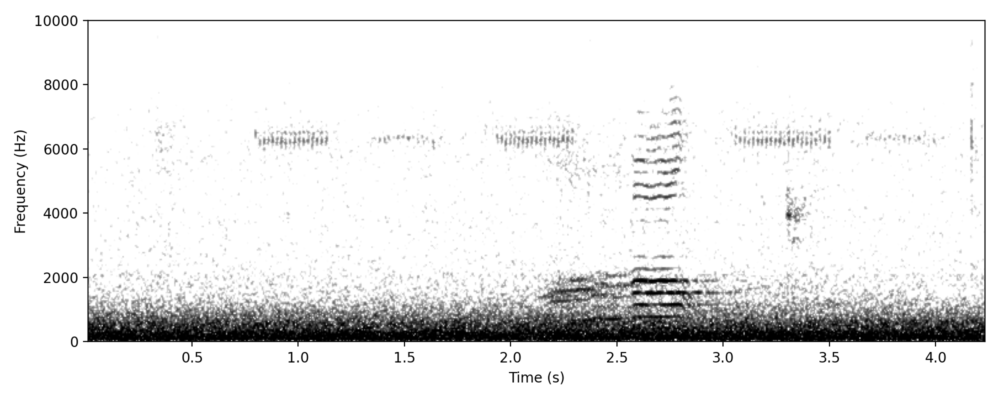
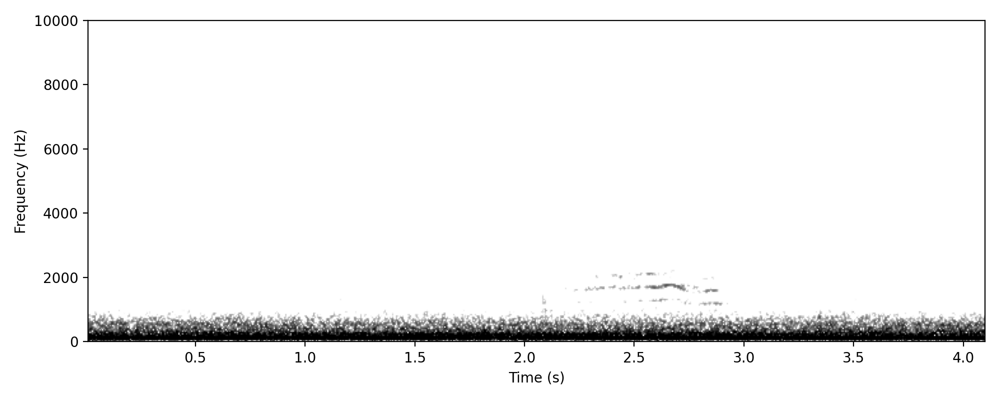
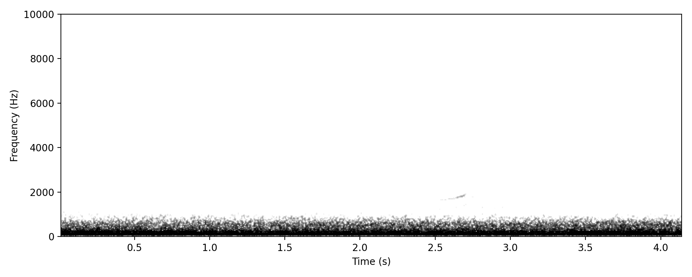
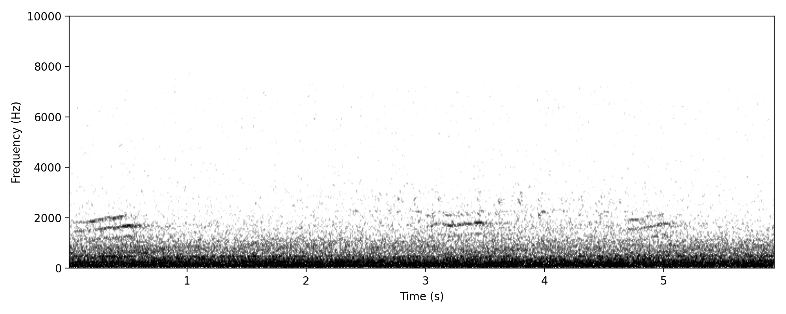

Chenonetta jubata
A drawn-out, nasal, slightly mournful call typically rendered as “new” or “now”, usually with a gentle rising inflection. The note lasts around 1–2 seconds and shows a slightly wavering, modulated structure rather than a pure tone. In the spectrogram, it appears as a banded signal concentrated in the low to mid frequencies (~300–2000 Hz), often with visible harmonic structure and a subtle upward sweep in frequency. The overall quality is reedy and hollow to the human ear.
Commonly given by birds in flight during the day and presumed here to be associated with flight activity at night. This likely includes local movements, but may also involve longer-distance or migratory movements. The frequency of occurrence in nocturnal recordings suggests regular night-time activity, although any seasonal or behavioural pattern remains to be established.
A highly distinctive and well-documented call that is widely familiar from daytime observations, where birds frequently give this vocalisation in flight. The acoustic structure and characteristic rising, nasal quality match reference recordings closely, and confusion with other species is effectively excluded.
Very high confidence. This is a diagnostic and widely recognised call with consistent acoustic structure, and there is effectively no risk of confusion with other species.
None, although watch out for domestic cat vocalisations, which can be surprisingly similar.
Project detections: 373 annotations; 55 nights; recorded in March, April, May, June, July, August, September; most recent detection 12 Aug 2026.



A faint, rhythmic wingbeat signal visible as a short series of weak broadband pulses, with most visible energy centred around ~2.5 kHz. Pulses are spaced at roughly 0.3-second intervals, producing a regular beat pattern across the spectrogram. The signal is much weaker than the accompanying vocalisations and may be difficult to detect without coincident calling birds or prior expectation of its presence.
Presumed to represent birds in active flight overhead, detected incidentally during a calling flight event. At present this appears to be an unusual or difficult-to-detect signal rather than a routinely recognisable nocturnal sound type, but additional examples may emerge with targeted searching.
This putative wingbeat sequence was detected at the same time as calling Australian Wood Ducks flying overhead, with the calls and beat pattern occurring together in the same recording. The temporal coincidence with unmistakable vocalisations strongly supports attribution to Australian Wood Duck, although only a single clear example has so far been identified.
Moderate to high confidence based on the exact temporal coincidence of the wingbeat pattern with diagnostic Australian Wood Duck calls from birds flying overhead. The identification relies on this contextual linkage rather than the intrinsic structure of the wingbeat signal itself, which is faint and not yet independently diagnostic. Confidence is therefore limited by the current availability of only a single clear example.
Other flying waterbirds or ducks could in principle produce superficially similar weak rhythmic wingbeat signatures, but in this case confusion is reduced by the exact coincidence with diagnostic Australian Wood Duck calls.
Project detections: 5 annotations; 5 nights; recorded in May, June, July; most recent detection 23 Jun 2026.
